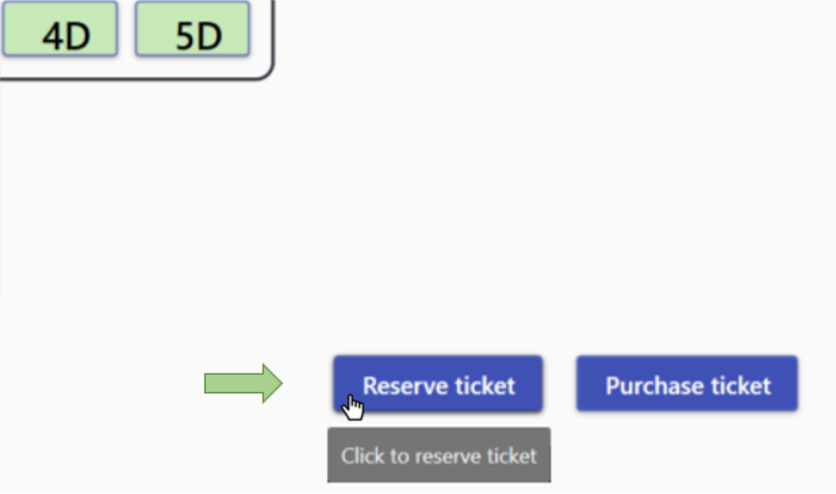
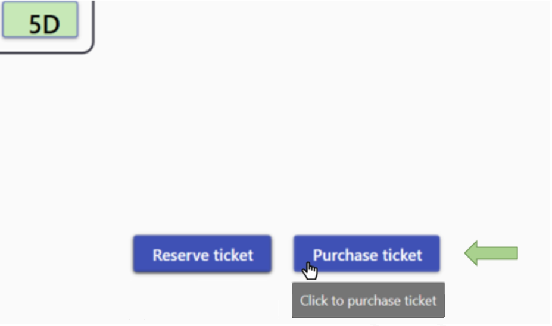

First click on a wagon in order to select it.
After that, the layout of the selected wagon will be displayed.
Click on one of the free seats in order to select it. Buttons for reservation and purchase will then be enabled.
Note that reservation is not possible less than 3 days before departure.
Click on the button 'Reserve ticket' to request ticket reservation for selected seat.
Click on the button 'Purchase ticket' to request ticket purchase for selected seat.
